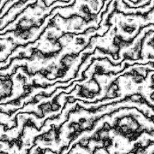

Matt's Graphics Tutorials
Intro
Setting Up Your Workspace
: How to do these tutorials on your own
Drawing on the Canvas
: Where and how the magic happens
Manipulating Colors
Color Arithmetic
: Adding, Subtracting, and performing operations on colors.
Image Arithmetic
: More of the same, but with entire images.
Classic Effects
Plasma
: The classic plasma effect.
Fire
: Much safer than the real thing.
Tunnel Effect
: It practically looks 3D!
Texture Generation
The XOR Texture
: A simple pattern that can come in handy.
Generating Textures with Random Noise
: Clouds, Marble, Sand, Wood...
